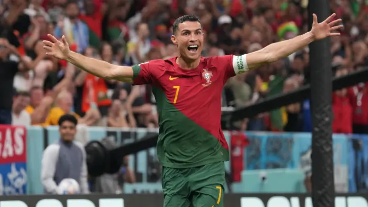
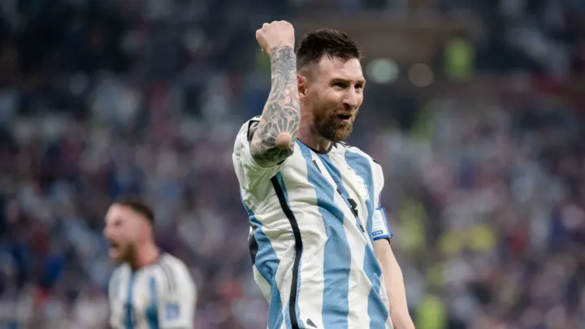
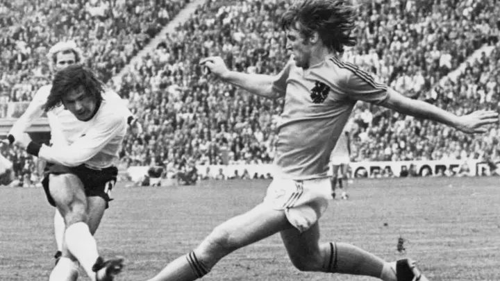

Cristiano Ronaldo
Cristiano Ronaldo:850+ goles en partidos oficiales.
Lionel Messi
Lionel Messi: 820+ goles en partidos oficiales.
Pelé

Pelé: 767 goles reconocidos por la FIFA en partidos oficiales (aunque Pelé afirmó haber marcado más de 1,200 en total, incluyendo amistosos)
Romario
Romário: 772 goles en partidos oficiales (Romário también afirmó haber superado los 1,000 goles sumando amistosos).
Gerd Müller
Gerd Müller: 735 goles en partidos oficiales.
Ferenc Puskás
Ferenc Puskás: 746 goles en partidos oficiales.
Josef Bican:
Josef Bican: 805 goles en partidos oficiales reconocidos.
Ronaldo Nazario

Ronaldo Nazário: 414 goles en partidos oficiales.
Thierry Henry
Thierry Henry: 411 goles en partidos oficiales.
Jimmy Greaves
Jimmy Greaves: 466 goles en partidos oficiales.